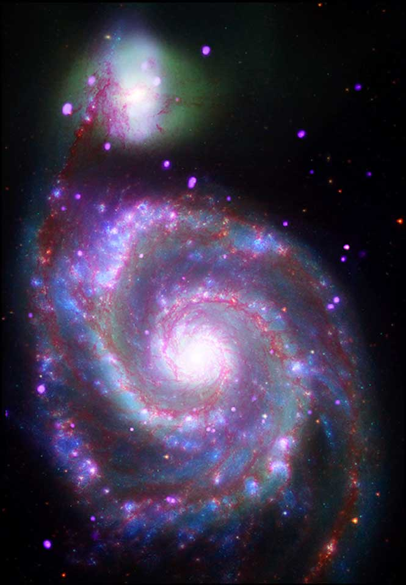

Spiral galaxies can be recognized by their wide, flat disks of rotating gas and dust.
Some spirals have wide flung arms like the above image of M51 below, while others have spirals that are more tightly bound.
Fun fact: our very own Milky Way is a spiral galaxy, and it is rotating at 168 miles per second. Now that’s fast!
